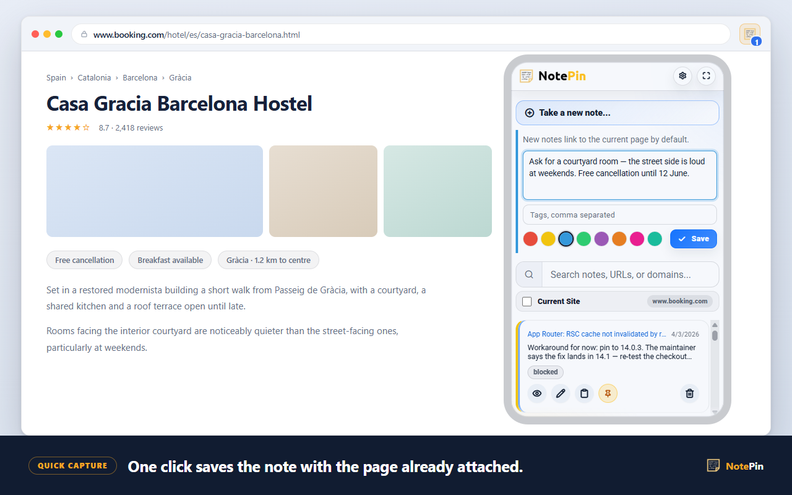

Step by step
Bookmark a page in Chrome
Three ways to bookmark any website, in order of speed.
The keyboard (fastest)
- Open the page you want to keep.
- Press Ctrl + D — on a Mac, ⌘ + D.
- A small dialog appears. Edit the name if you want a shorter one.
- Pick a folder from the dropdown, then click Done.
The star icon
- Look at the right-hand end of the address bar.
- Click the star. It fills in to show the page is saved.
- The same dialog appears — rename, choose a folder, click Done.
The menu
- Click the three-dot menu at the top right.
- Go to Bookmarks and lists.
- Choose Bookmark this tab.
Step by step
Bookmark a page in Edge
Edge calls them favourites, but everything works the same way.
This is the single most common source of confusion when moving between the two browsers. A bookmark in Chrome and a favourite in Edge are the same thing under two names, and the keystroke is identical.
- Open the page you want to keep.
- Press Ctrl + D — on a Mac, ⌘ + D.
- Name it, choose a folder, and click Done.
The star icon in the address bar does the same. To see everything you have saved, press Ctrl + Shift + O to open the favourites manager, or find Favourites in the three-dot menu.
Step by step
Show the bookmarks bar
The bar under the address bar is the fastest place to put pages you open every day. It is hidden by default in both browsers.
- Press Ctrl + Shift + B — on a Mac, ⌘ + Shift + B.
- The bar appears. Press the same keys again to hide it.
How to add a website to the bookmarks bar
Two options once the bar is visible:
- Drag it. Grab the padlock or page icon at the left of the address bar and drop it onto the bar.
- Choose the folder. Press Ctrl + D and pick Bookmarks bar from the folder dropdown.
Reference
Every shortcut worth knowing
| Windows / Linux | Mac | What it does |
|---|---|---|
| Ctrl + D | ⌘ + D | Bookmark the current page |
| Ctrl + Shift + D | ⌘ + Shift + D | Bookmark every open tab into one new folder |
| Ctrl + Shift + B | ⌘ + Shift + B | Show or hide the bookmarks bar |
| Ctrl + Shift + O | ⌘ + Option + B | Open the bookmark manager |
The second row is the one most people have never used. Finished with a research session across eleven tabs? Ctrl + Shift + D puts all of them into a single dated folder in one keystroke, and you can close the window without losing anything.
Reference
Where bookmarks live and how they sync
Bookmarks are stored in your browser profile on your own computer. If you are signed in and syncing is on, a copy also lives in your account, which is what makes them appear on your other devices.
- Chrome syncs through your Google account, if bookmark syncing is enabled in settings.
- Edge syncs through your Microsoft account, the same way.
- Bookmarks made while signed out stay on that device until you sign in.
- Both browsers can export everything to an HTML file, which every other browser can import.
The limitation
What a bookmark cannot record
A bookmark stores that you saved a page. It has nowhere to put why.
This is the design of the thing, not a bug. A bookmark is a title and an address. There is no field for the sentence you would want six months later — the one that says "this is the page with the actual pricing table", or "third comment down is the fix", or "compare against the other vendor before deciding".
The consequences show up slowly, then all at once:
- Folders multiply, then nest, and the nesting becomes its own filing problem.
- The same page gets saved three times from three different searches.
- Searching bookmarks only matches the title and address — never your reason for keeping it.
- A title like "Home | Acme" tells you nothing, and dozens of them tell you less.
- Pages get rewritten. The bookmark still resolves; the paragraph you wanted is gone.
Most advice about this suggests better folder discipline. That helps for a while. It does not address the actual gap, which is that there is no room for a thought.
The alternative
Adding the missing "why"
The fix is not a better folder tree. It is attaching a note to the address, so the reason travels with the link.
That is what NotePin does. A note is a piece of text with a web address attached — up to 2,000 characters of your own words, saved against the page they are about. Because the reason is stored as text, it is searchable, which is the part folders can never offer.

| Bookmark | Note with an address | |
|---|---|---|
| Stores the address | Yes | Yes |
| Stores the page title | Yes | Yes, up to 80 characters |
| Room for your reasoning | No | Yes, up to 2,000 characters |
| Searchable by that reasoning | No | Yes |
| Grouped automatically by site | No — you file it | Yes |
| Can appear on the page itself | No | Optional |
The two are not rivals. Keep bookmarking the sites you open daily — the bar is genuinely the right tool for that. Use notes for the pages you had a thought about, which is a different and much smaller set.
Answers
Common questions
How do you bookmark a website?
Open the page you want to keep and press Ctrl + D on Windows or Command + D on a Mac. A small dialog appears where you can rename the bookmark and choose a folder. Press Done and the page is saved. You can also click the star icon at the right-hand end of the address bar, which does exactly the same thing.
How do I bookmark a webpage in Microsoft Edge?
Edge calls bookmarks favourites, but the keystroke is the same: Ctrl + D on Windows or Command + D on a Mac. The star icon in the address bar adds the page to favourites, and Ctrl + Shift + O opens the favourites manager. Edge favourites sync through your Microsoft account rather than a Google one.
How do I add a website to the bookmarks bar?
First make the bar visible with Ctrl + Shift + B, or Command + Shift + B on a Mac. Then either drag the padlock or icon at the left of the address bar straight down onto the bar, or press Ctrl + D and choose Bookmarks bar as the folder in the dialog that appears.
Do Chrome bookmarks sync between computers?
Yes, if you are signed in to Chrome with the same Google account on each computer and syncing is turned on for bookmarks. Edge does the same through a Microsoft account. Bookmarks saved while signed out stay on that device only until you sign in.
Where to go next
If your bookmark folders have already got away from you, read a better bookmark manager. To keep the actual paragraph rather than just the link, see saving selected text.